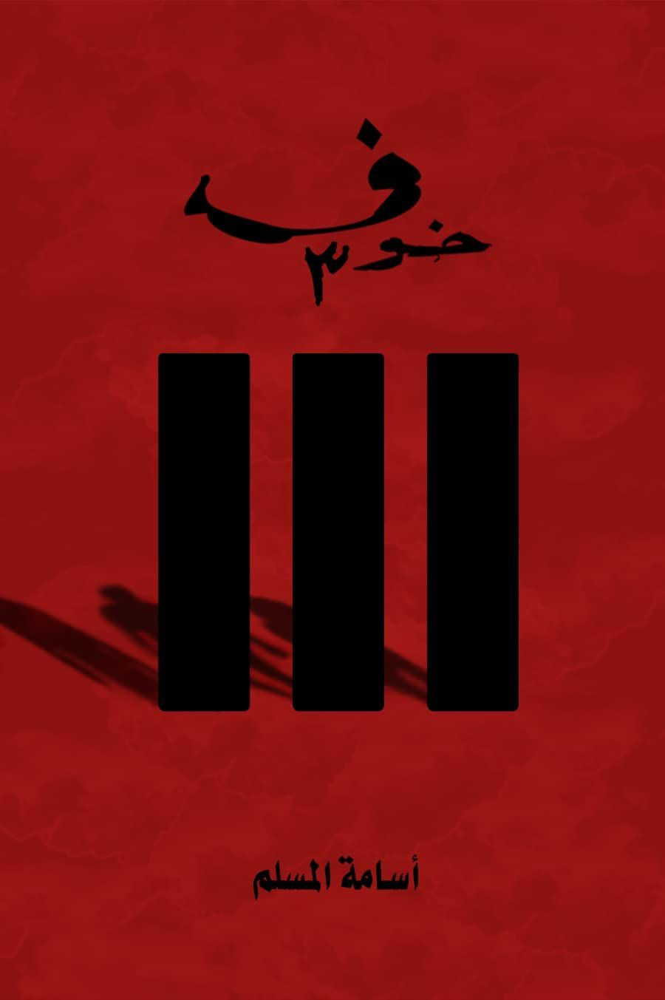
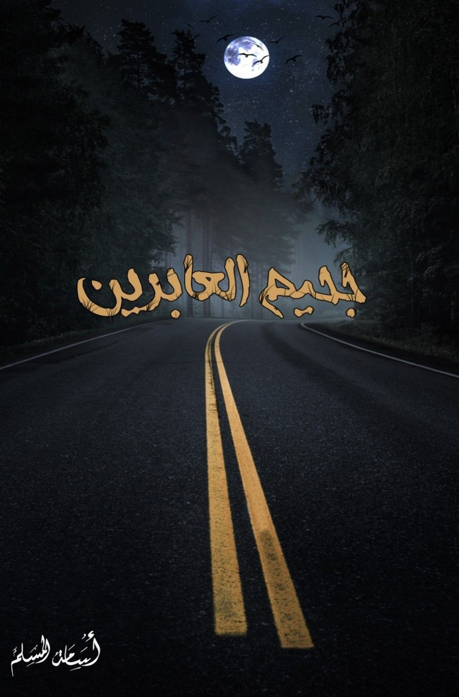
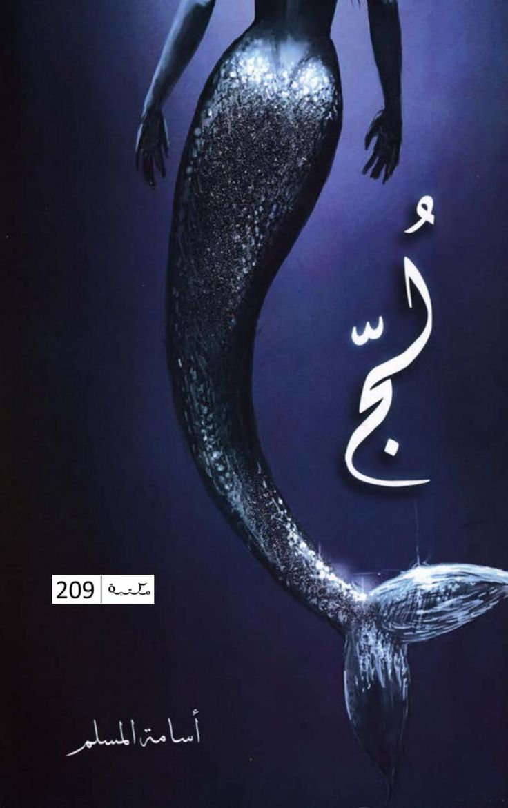

اذهب الى 2
الكاتب الاول
اضغط للشراء

رواية بها رعب وخوف وغموض حيث يبحر بنا أسامة المسلم عبر بوابة الجان والشياطين والطلاسم وتحرر القرين. 84 ر.س
اذهب الى 3
"
الكاتب الثاني
اضغط للشراء

جحيم العابرين بقلم أسامة المسلم ... يقال أن الحياة ما هي إلا طريق سفر طويل ..
ملئ بالحفر والمطبات نتجاوزها وتكمل سيرنا الذي يتخلله بعض المحطات .. 29ر.س
اذهب الى 1
الكاتب الثالث
اضغط للشراء

رواية لج للكاتب أسام المسلم هي أحد الأجزاء المهمة من سلسلة البحور السبعة، تدور أحداث
الرواية عن البحر الذي قد يكون عشقًا أو شيطانًا في بعض الأحيان.59.99 ر.س